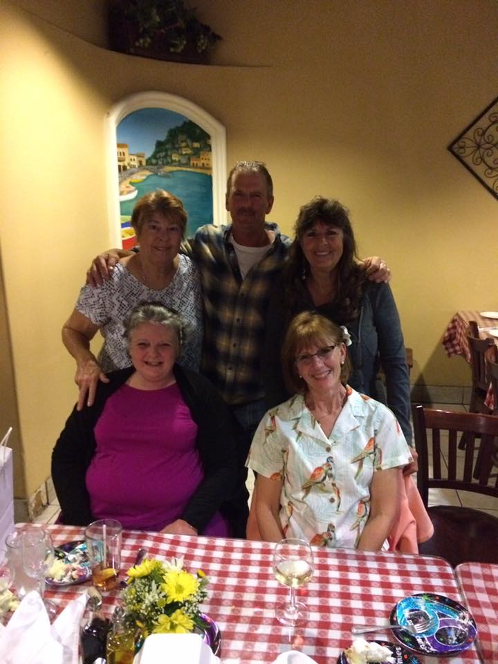

“Families are like branches on a tree. We grow in different directions yet our roots remain as one.”
The Bourdet Family
The Bourdet family with Rene Laurent Bourdet as father, and Lydia Anne Stewart as mother has a rich heritage on both sides of the family.
Sometime around 1955, Rene and Lydia met and in 1956 they married.
Rene worked as a butcher at Campbell's Market in Saratoga. Lydia was a homemaker.
- Lucie Marie Bourdet was born on October 18, 1956.
- Michael Rene Bourdet was born on January 18, 1959
- Katherine Anne Bourdet was born June 6, 1963.
- John Paul Bourdet was born February 25, 1966.
We all lived together in a three bedroom house in Saratoga, California that René purchased for $5,000. His parents lived across the street. Grandma Lucie's brother, "Uncle Bob", was an older blind man that lived with his sister's family. Lydia's godmother, Katherine Delaney lived next to them. On the adjoining lot lived Louie Lacampagna, a friend of my grandfather from France. His grandchildren were our childhood friends. A few blocks away lived Jean Bourdet, Cyprien's brother, and our great-uncle and his wife, Tante Marie Jeane. Next to them lived the Forcier family, Yvonne was first cousin to René. She married Dave Forcier from Canada. Their children Denise, Davey, Yvette, and Deanna were our 2nd cousins, and close friends. During the summers, we would spend half the day with Grandma Lucie, tending her garden, picking fruit, and playing cards. We would have frequent family gatherings at Grandma and Grandpa's house. They had a "Summer house" that was basically a pavilion where we ate and sang old French songs and told stories. In the colder months, we met inside.
